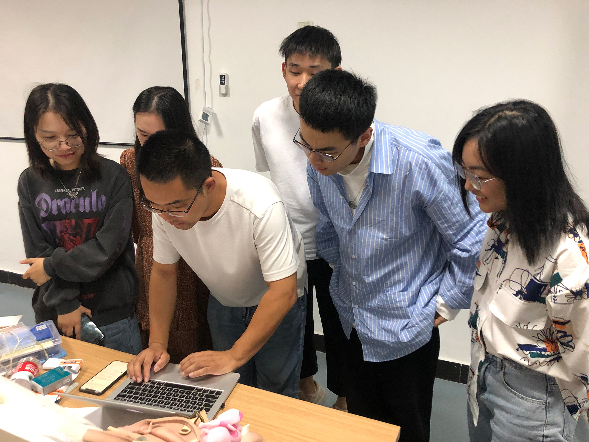

After an intimate lesson on design engineering with Arduino, the group sat around to exchange ideas and bounce ideas off each other while the iron was hot, trying to establish the direction of the final project as soon as possible.
Due to the wide range of options and the desire to create a new and different innovative interactive device, the discussion was lively, but at one point there was a stalemate that prevented clear progress.
Bob Wu came up to us and gave us a bit of experience and tips when we were all a bit frustrated. The first thing he showed us was the Arduino based device he had made before, which was a metal tin 3D printer. Then he told us that we could think of small assignments that had nothing to do with the final project, and that the final project could also be slowly expanded and clarified by doing small assignments. However, it is recommended that after three or four small assignments, the final project can be combined with the final project to purposefully design and finally integrated into the larger assignments to use, which will reduce the pressure in the later stages of the course.
We were very agreeable and applauded in unison, thanking the teacher for his guidance.It was getting late and we were hungry even though we hadn't had enough. So we agreed that tomorrow we would all find some information and directions beforehand and come back to share and exchange ideas.